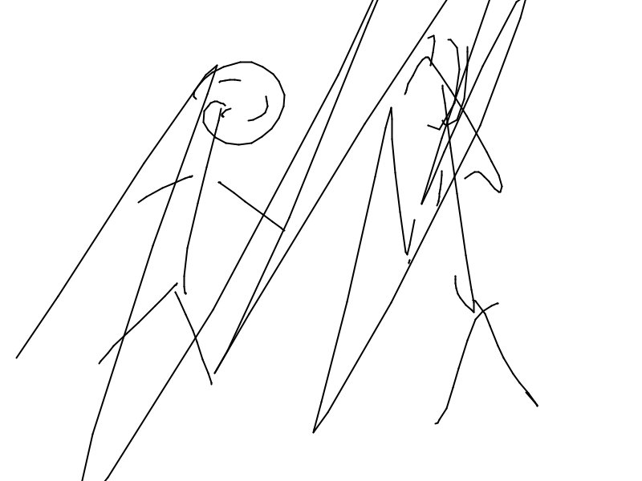

==>

Eri was drawing a picture of the group in what seemed like medieval clothing fighting a monster.
Eri: I hope this is what Vburb will be like. Maybe we find some loot and fight monsters.
Dusty: I don't even know. I'm just happy we get to do something together again.
Eri: What do you think it'll be, like what will the compass lead to.
Dusty: Maaan i don't knowww. It could lead to nothing, we aren't sure what the alien game entails. Maybe it just leads to a normal tree that aliens think is fun, we can't even read the manual.
Eri: Aegis was trying. I'm still not sure if he's telling the truth about this machine coming out of a meteor.
Dusty: So what Aegis made it all up? Made some technology to create magical items.
Eri: well... i donno....
In another roomGo Back